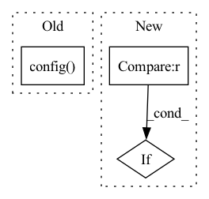

Pattern ID :15171
Before Change
return True
def config(self, **kwargs):
super().config( kwargs.get("dump_all", None), kwargs.get("exclude", None))
class DropnaProcessor(Processor):
def __init__(self, fields_group=None):After Change
def config(self, **kwargs):
attr_list = {"fit_start_time", "fit_end_time"}
for k, v in kwargs.items():
if k in attr_list and getattr(self, k, None) is not None:
setattr(self, k, v)
for attr in attr_list:In pattern: SUPERPATTERN
Frequency: 3
Non-data size: 3
Instances Fragment ID: 51355258
Project Name: microsoft/qlib
Commit Name: 136830bc2bf8281838d96c22fb0cdd45e93ae16b
Time: 2021-03-29
Author: bxddream@gmail.com
File Name: qlib/data/dataset/processor.py
M Class Name: Processor
N Class Name: Processor
M Method Name: config(1)
N Method Name: config(1)
M Parent Class: Serializable
N Parent Class: Serializable
M File Name: qlib/data/dataset/processor.py
N File Name: qlib/data/dataset/processor.py
M Start Line: 76
M End Line: 76
N Start Line: 76
N End Line: 84
Before Change
return True
def config(self, **kwargs):
super().config( kwargs.get("dump_all", None), kwargs.get("exclude", None))
class DropnaProcessor(Processor):
def __init__(self, fields_group=None):After Change
def config(self, **kwargs):
attr_list = {"fit_start_time", "fit_end_time"}
for k, v in kwargs.items():
if k in attr_list and getattr(self, k, None) is not None :
setattr(self, k, v)
for attr in attr_list: Fragment ID: 51355257
Project Name: microsoft/qlib
Commit Name: 136830bc2bf8281838d96c22fb0cdd45e93ae16b
Time: 2021-03-29
Author: bxddream@gmail.com
File Name: qlib/data/dataset/processor.py
M Class Name: Processor
N Class Name: Processor
M Method Name: config(1)
N Method Name: config(1)
M Parent Class: Serializable
N Parent Class: Serializable
M File Name: qlib/data/dataset/processor.py
N File Name: qlib/data/dataset/processor.py
M Start Line: 76
M End Line: 76
N Start Line: 76
N End Line: 84
Before Change
raise ValueError("model is not fitted yet!")
dl_test = dataset.prepare("test", col_set=["feature", "label"], data_key=DataHandlerLP.DK_I)
dl_test.config(fillna_type="ffill+bfill")
test_loader = DataLoader(dl_test, batch_size=self.batch_size, num_workers=self.n_jobs)
self.model.eval()
preds = []
After Change
sample_num = x_values.shape[0]
preds = []
for begin in range(sample_num)[:: self.batch_size]:
if sample_num - begin < self.batch_size :
end = sample_num
else:
end = begin + self.batch_size
Fragment ID: 51355256
Project Name: microsoft/qlib
Commit Name: bee031af68cd0864c8329de13608c2d4feb58fc1
Time: 2021-07-21
Author: yl3851@uw.edu
File Name: qlib/contrib/model/pytorch_transformer.py
M Class Name: TransformerModel
N Class Name: TransformerModel
M Method Name: predict(3)
N Method Name: predict(2)
M Parent Class: Model
N Parent Class: Model
M File Name: qlib/contrib/model/pytorch_transformer.py
N File Name: qlib/contrib/model/pytorch_transformer.py
M Start Line: 206
M End Line: 220
N Start Line: 222
N End Line: 243
Before Change
raise ValueError("model is not fitted yet!")
dl_test = dataset.prepare("test", col_set=["feature", "label"], data_key=DataHandlerLP.DK_I)
dl_test.config(fillna_type="ffill+bfill")
test_loader = DataLoader(dl_test, batch_size=self.batch_size, num_workers=self.n_jobs)
self.model.eval()
preds = []
After Change
sample_num = x_values.shape[0]
preds = []
for begin in range(sample_num)[:: self.batch_size]:
if sample_num - begin < self.batch_size :
end = sample_num
else:
end = begin + self.batch_size
Fragment ID: 51355255
Project Name: microsoft/qlib
Commit Name: bee031af68cd0864c8329de13608c2d4feb58fc1
Time: 2021-07-21
Author: yl3851@uw.edu
File Name: qlib/contrib/model/pytorch_localformer.py
M Class Name: LocalformerModel
N Class Name: LocalformerModel
M Method Name: predict(3)
N Method Name: predict(2)
M Parent Class: Model
N Parent Class: Model
M File Name: qlib/contrib/model/pytorch_localformer.py
N File Name: qlib/contrib/model/pytorch_localformer.py
M Start Line: 209
M End Line: 223
N Start Line: 223
N End Line: 244